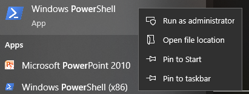

Instalar OpenSSH a través de PowerShell
Cuando utilizas ssh <nombredeusuario>@<hostname>.local (o ssh <nombredeusuario>@<direcciónIP>) para conectarte a tu Raspberry Pi, pero aparece el siguiente mensaje de error:
ssh: El término 'ssh' no se reconoce como el nombre de un cmdlet, función, archivo de script o programa ejecutable. Verifique la ortografía del nombre, o si se incluyó una ruta, verifique que la ruta sea correcta e intente nuevamente.
Significa que tu sistema operativo es demasiado antiguo y no tiene OpenSSH preinstalado, por lo que necesitas seguir el tutorial a continuación para instalarlo manualmente.
Escribe
powershellen el cuadro de búsqueda de tu escritorio de Windows, haz clic derecho enWindows PowerShelly seleccionaEjecutar como administradoren el menú que aparece.Utiliza el siguiente comando para instalar
OpenSSH.Client.Add-WindowsCapability -Online -Name OpenSSH.Client~~~~0.0.1.0
Después de la instalación, se mostrará la siguiente salida.
Path : Online : True RestartNeeded : False
Verifica la instalación utilizando el siguiente comando.
Get-WindowsCapability -Online | Where-Object Name -like 'OpenSSH*'
Ahora te indica que
OpenSSH.Clientse ha instalado correctamente.Name : OpenSSH.Client~~~~0.0.1.0 State : Installed Name : OpenSSH.Server~~~~0.0.1.0 State : NotPresent
Advertencia
Si el mensaje anterior no aparece, significa que tu sistema Windows sigue siendo demasiado antiguo, y se te recomienda instalar una herramienta SSH de terceros, como PuTTY.
Ahora reinicia PowerShell y vuelve a ejecutarlo como administrador. En este punto, podrás iniciar sesión en tu Raspberry Pi utilizando el comando
ssh, donde se te pedirá que ingreses la contraseña que configuraste anteriormente.